금속재료시험기능사 (2008-10-05 기출문제)
1과목: 금속재료일반
1. Ni-Fe계 합금은 강하고 인성이 좋으며 열팽창계수가 상온부근에서 매우 작아 길이의 변화가 어의 없어 표준자나 바이메탈의 재료로 사용되는 것은?
- 콘스탄탄
- 모넬메탈
- 크로엘
- 인바
(정답률: 72%)

2. 합금의 평형 상태도에서 X축과 Y축은 각각 무엇을 뜻하는 것인가?
- 중량과 시간
- 조성과 온도
- 수축과 중량
- 부피와 질량
(정답률: 68%)
3. 압력은 대기압으로 일정할 때 금속과 같은 응축계에서 성분수를 n, 상의 수를 P라고 하면, 자유도(F)를 구하는 식으로 옳은 것은?
- F=n+2-P
- F=n+1-P
- F=n+3-P
- F=n-P
(정답률: 58%)
4. 다음 중 상온에서 조밀육방격자만으로 짝지어진 것은?
- Cr, Mo
- Fe, Ca
- Ti, Mg
- Cu, Ag
(정답률: 72%)
5. Cr-Ni 강이라고도 하며, Cr2O3 라는 치밀하고도 일정한 산화피막을 형성하여, 칼, 식기, 취사 용구, 화학 공업 장치 등의 용도에 가장 적합한 것은?
- 주철
- 규소강
- 저합금강
- 스테인리스강
(정답률: 84%)
6. 다음 중 순철의 자기 변태점(큐리점)은 약 몇 ℃인가?
- 1539
- 1400
- 910
- 768
(정답률: 55%)
7. Fe-C 평형 상태도에서 동소변태와 관련이 없는 것은?
- A3 및 A4 변태점이 있다.
- A0 및 A2 변태점이 있다.
- 결정구조가 바뀌는 것을 말한다.
- 일정한 온도에서 급격히 비연속적으로 일어난다.
(정답률: 59%)
8. 금속의 화학적 성질 중 이온화 경향에 관한 설명으로 틀린 것은?
- 이온화 경향이 큰 금소은 산화되기 쉽다.
- 염산에 아연을 넣으면 수소가스를 발생시킨다.
- 수소보다 이온화 경향이 큰 금속을 산에 넣으면 산소가스가 석출하면서 응고한다.
- 수소보다 이온화 경향이 큰 금속은 습기가 있는 대기 중에서 부식되기 쉽다.
(정답률: 66%)
9. 다음 중 기능성 재료로서 실용하고 있는 가장 대표적인 형상기억합금으로 원자비가 1:1의 비율로 조성되어 있는 합금은?
- Ti-Ni
- Au-Cd
- Cu-Cd
- Cu-Sn
(정답률: 85%)
10. 전기구리를 용융정제하여 구리 중의 산소를 0.02~0.04% 정도 남긴 구리를 무엇이라 하는가?
- 정련구리
- 탈탄구리
- 합금구리
- 경화구리
(정답률: 59%)
11. 금속의 응고시 과냉(super cooling)의 정도가 커지면 결정립은 어떻게 되는가?
- 결정립은 커진다.
- 결정립은 미세해진다.
- 결정립의 변화는 없다.
- 결정립이 작아졌다가 다시 커진다.
(정답률: 59%)
12. 4%Cu, 2%Ni 및 1.5%Mg이 첨가된 알루미늄 합금으로 내연기관용 피스톤이나 실린더 헤드 등으로 사용되는 재료는?
- Lo-Ex 합금
- Y합금
- 라우탈(lautal)
- 하이드로날륨(hydronalium)
(정답률: 68%)
13. 다음 중 주철명과 이에 따른 특징을 설명한 것으로 틀린 것은?
- 회주철은 보통주철이라고하며, 펄라이트 바탕 조직에 검고 연한 흑연이 주철의 파단면에서 회색으로 보이는 주철이다.
- 미해나이트주철은 저급주철이라고하며, 흑연이 조대하고, 활모양으로 구부러져 고르게 분포한 주철이다.
- 합금주철은 합금강의 경우와 같이 주철에 특수원소를 첨가하여 내식성, 내마멸성, 내충격성 등을 좋게한 주철이다.
- 가단주철은 백주철을 열처리로에 넣어 가열하여 탈탄 또는 흑연화 방법으로 제조한 주철이다.
(정답률: 50%)
14. 다음 중 분말상의 구리에 약 10%의 주석분말과 2%의 흑연분말을 혼합하고 윤활제 또는 휘발성 물질을 가한 다음 가압 성형하고 제조하여 자동차, 시계, 방적기계 등의 급유가 어려운 부분에 사용하는 합금은?
- 자마크
- 하스텔로이
- 화이트 메탈
- 오일리스 베어링
(정답률: 71%)
15. 다음 중 체심입방격자(BCC)의 배위수는?
- 6개
- 8개
- 12개
- 16개
(정답률: 77%)
16. 다음과 같은 제품을 제 3각법으로 투상한 것 중 옳은 것은? (단, 화살표 방향을 정면도로 한다.)
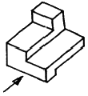
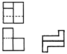
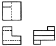
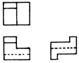
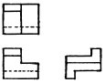
(정답률: 76%)
17. 그림은 교량의 트러스 구조물이다. 중간 부분을 절단하여 그린 주된 이유는 무엇인가?
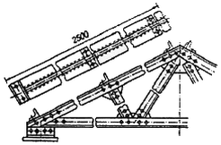
- 좌우, 상하 대칭을 도면에 나타내기 어렵기 때문에
- 반복 도형을 도면에 나타내기 어렵기 때문에
- 물체를 1각법 또는 3각법으로 나타내기 어렵기 때문에
- 물체가 길어서 도면에 나타내기 어렵기 때문에
(정답률: 69%)
18. 치수 보조 기호에 대한 설명이 잘못 짝지어진 것은?
- ø25 : 지름이 25mm이다.
- SR450 : 구의 반지름이 450mm이다.
- t5 : 판의 두께가 5mm이다.
- C45 : 동심원의 길이가 45mm이다.
(정답률: 77%)
19. 다음 중 도면의 크기가 가장 큰 것은?
- A0
- A2
- A3
- A4
(정답률: 82%)
20. 다음 도면에서 가는 실선으로 그려야 할 곳을 모두 고으면?
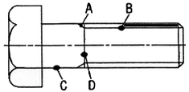
- A
- A, B
- A, B, C
- A, B, C, D
(정답률: 54%)
2과목: 금속제도
21. 스프링 강재를 표시하는 기호는?
- SKH
- STC
- STD
- SPS
(정답률: 72%)
22. 대상물의 보이지 않는 부분의 모양을 표시하는데 쓰이는 선의 명칭은?
- 숨은선
- 외형선
- 파단선
- 2점쇄선
(정답률: 74%)
23. 다음에 표시된 치수 중 치수허용차가 가장 큰 것은?
- 30±0.010
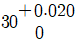
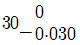
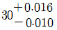
(정답률: 63%)
24. 정투상도법과 관련된 설명으로 틀린 것은?
- 평면도는 정면도와 수직선상에 있다.
- 정면도의 가로 길이는 평면도의 가로 길이와 같다.
- 정면도의 높이는 평면도의 높이와 같다.
- 평면도의 세로 길이는 우측면도의 가로 길이와 같다.
(정답률: 69%)
25. 제도에 사용되는 척도의 종류 중 현척에 해당하는 것은?
- 1:1
- 1:2
- 2:1
- 1:10
(정답률: 67%)
26. 각국의 표준규격 중 독일의 규격기호로 옳은 것은?
- KS
- BS
- DIN
- ISO
(정답률: 64%)
27. 다음의 단면도 중 위, 아래 또는 왼쪽과 오른쪽이 대칭인 물체의 단면을 나타낼 때 사용되는 단면도는?
- 한쪽 단면도
- 부분 단면도
- 온 단면도
- 회전 도시 단면도
(정답률: 61%)
28. 와전류탐상검사에 대한 설명으로 옳은 것은?
- 시험체는 부도체이어야 한다.
- 형상은 복잡하며, 내부 결합 검출에 용이하다.
- 결함의 형상이나 깊이를 정확하게 알 수 없다.
- 측정값에 영향을 미치는 요인이 적어 해석하기 쉽다.
(정답률: 54%)
29. 다음 중 투과 정자 현미경을 나타내는 약호는?
- STB
- UTM
- SEM
- TEM
(정답률: 56%)
30. 다음 중 초음파 탐상에 사용하는 초음파가 아닌 것은?
- 종파
- 역파
- 판파
- 표면파
(정답률: 55%)
31. 그라인더 불꽃 시험 중 탄소의 파열을 조장하는 원소가 아닌 것은?
- Mn
- Cr
- W
- V
(정답률: 40%)
32. 다음 중 압축 시험편에 대한 설명으로 옳은 것은?
- 압축강도를 측정할 경우에는 장주형 시험편을, 탄성을 측정할 경우에는 단추형 시험편을 준비한다.
- 시험편은 단면이 완전히 평행이 되도록 하여 시험 후 편심의 영향이 생기지 않도록 한다.
- 파괴를 목적으로 할 경우에는 길이를 지름의 약 3~4배(L=3~4d)로 한다.
- 장추형 시험편의 높이는 직경의 0.9배로 하고, 단주형 시험편의 높이는 직경의 10배로 한다.
(정답률: 40%)
33. 3점 굽힘시험을 할 때의 받침부사이의 거리와 시험편 두께와의 관계식으로 옳게 나타낸 것은? (단, L=2개 받침사이의 거리, r=누르개 안쪽 반지름, t=시험편의 두께ㆍ지름ㆍ변 또는 맞변거리이다.)
- L=r+t
- L=2r+3t
- L=3r+t
- L=4r+3t
(정답률: 58%)
34. 쇼어 경도 시험기에 관한 설명으로 옳은 것은?
- 다이아몬드 압입자국에 의하여 측정한다.
- D형 경도시험기의 낙하거리는 19mm(3/4인치)이다.
- 고무와 같은 탄성이 큰 재료를 시험할 때 경도값의 신뢰성이 크다.
- 시험편의 두께는 10mm 이상이어야 하며 피측정물의 크기에 제한이 많다.
(정답률: 28%)
35. 다음 중 매크로 시험에 대한 설명으로 틀린 것은?
- 결정격자의 패턴을 분석할 수 있다.
- 확대경을 사용하거나 육안으로 검사한다.
- 표면을 부식시켜 파면검사를 할 수 있다.
- 조직의 분포상태 및 모양 등을 검사할 수 있다.
(정답률: 41%)
36. 측정 시야수(f)가 60이고, 이 시야에서 전 개재물이 점유한 격자점 중심의 수(n)가 6이며, 시야 내의 유리판 위의 총 격자점의 수(p)가 100일 때 청정도는 몇 % 인가?
- 0.1
- 0.36
- 1.0
- 3.6
(정답률: 29%)
37. 다음 중 고온 금속현미경으로 관찰할 수 없는 것은?
- 성분 조성과 합금의 변화
- 금속 용해와 응고 현상
- 소성 변형과 파단 현상
- 결정입자의 성장과 상의 변화
(정답률: 46%)
38. 황이 강의 외주부로부터 중심부로 향하여 감소하게 분포되고, 외주부보다 중심부 방향으로 착색도가 낮게 된 형태의 편석은?
- 중심부편석
- 주상편석
- 점상편석
- 역편석
(정답률: 51%)
39. 강의 불꽃 시험에서의 안전 및 유의 사항으로 틀린 것은?
- , 연마 도중 시험편을 놓치지 않도록 주의한다.
- 그라인더를 사용할 때에는 보안경을 착용하여야 한다.
- 그라인더에 스위치를 넣은 다음, 곧바로 불꽃 시험을 한다.
- 연삭 숫돌을 갈아 끼울 때에는 숫돌의 이상 유무를 확인 한 후 고정 설치한다.
(정답률: 78%)
40. 침탄 열처리시에 발생되는 가스로서 무색, 무미, 무취이며, 연료의 불완전 연소로 발생하여 사람이 흡입하면 인명 피해를 주는 유해한 가스는?
- 일산화탄소
- 이산화탄소
- 암모니아
- 산소
(정답률: 65%)
3과목: 금속재료조직 및 비파괴시험
41. 표면에 열린 결함을 모세관 현상을 이용하여 검출하는 비파괴 검사법은?
- 중성자탐상검사법
- 초음파탐상검사법
- 적외선탐상검사법
- 침투탐상검사법
(정답률: 74%)
42. 재료에 단일 충격을 주었을 때 흡수되는 흡수 에너지를 노치부의 단면적으로 나눈 값으로 나타내는 것은?
- 샤르피 충격값
- 커핑 시험값
- 피로 시험값
- 인장 시험값
(정답률: 73%)
43. 비커즈 경도기에 사용하는 다이아몬드 피라미드 압입자의 대면각은 몇 도인가?
- 76
- 90
- 116
- 136
(정답률: 84%)
44. 방사선량 측정기 또는 개인 피폭선량 측정기가 아닌 것은?
- 서베이메타(surveymeter)
- 필름배지(filmbadge)
- 에릭션메타(erichsenmeter)
- 포켓도시메타(pocket dosimeter)
(정답률: 47%)
45. 다음 중 크리프 시험(Creep testing)에 대한 설명으로 옳은 것은?
- 제1기 크리프는 감속 크리프라 한다.
- 제2기 크리프는 가속 크리프라 한다.
- 제3기 크리프는 정상 크리프라 한다.
- 크리프 한도란 일정 온도에서 어떤 시간 후에 크리프 속도가 1이 되는 음력을 말한다.
(정답률: 42%)
46. 다이아몬드로 시험편 표면을 긁어서 그 홈의 모양의 의해 경도를 정량적으로 측정하는 경도 시험법은?
- 쇼어 경도시험
- 마르텐스 경도시험
- 로크웰 경도시험
- 비커스 경도시험
(정답률: 52%)
47. 유류 화재시 부적당한 소화 설비는?
- 수종(물통)
- 건조사
- 이산화탄소 소화설비
- 할로겐 화합물 소화설비
(정답률: 57%)
48. 다음 중 강의 담금질성을 측정하기 위한 시험법으로 옳은 것은?
- 피로시험
- 조미니시험
- 충격시험
- 파단면 분석시험
(정답률: 82%)
49. 자분탐상검사의 시험 절차로 옳은 것은?
- 자화→전처리→관찰→자분의 적용→기록→후처리
- 전처리→자화→자분의 적용→기록→후처리→관찰
- 전처리→자화→자분의 적용→관찰→기록→후처리
- 전처리→자분의 적용→관찰→자화→기록→후처리
(정답률: 70%)
50. 현미경으로 조직시험을 하기 위한 시험편에 대한 설명으로 틀린 것은?
- 시험편의 면은 반드시 경사가 되도록 연마한다.
- 시험편은 부식시키기 전에 연마면에 스크래치가 없어야 한다.
- 견본 시험편은 사용할 수 있는 자재를 대표할 수 있는 것으로 채취해야 한다.
- 알맞게 부식되었을 때 시험편은 몰로 세척하고 건조시킨 후 알콩 등에 넣었다가 다시 건조한다.
(정답률: 60%)
51. 설퍼 프린트에서 황산 처리한 인화지를 갈색으로 변색시키는 물질은?
- 황화은
- 황화수소
- 브롬화은
- 황화망간
(정답률: 30%)
52. 정량조직검사 중 결정 입도 시험법이 아닌 것은?
- 비교법(FGC)
- 평균법(FGE)
- 평적법(FGP)
- 절단법(FGI)
(정답률: 38%)
53. 시험 전의 원길이가 Lo, 시험 후에 L로 될 때 연신율을 나타낸 식으로 옳은 것은?
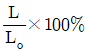
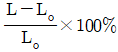
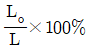
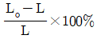
(정답률: 57%)
54. 시험편이 파괴되기 직전의 최소 단면적 25mm2, 원단면적 28mm2일 때 단면수축율은 약 몇 %인가?
- 11
- 22
- 30
- 42
(정답률: 61%)
55. 다음 중 액체침투탐상시험에서 현상제를 적용하는 목적으로 옳은 것은?
- 시험편의 건조를 촉진하기 위한 것이다.
- 잔류 침투액을 내부로 흡수하기 위한 것이다.
- 침투제의 침투력을 촉진하기 위한 것이다.
- 스며든 침투액이 표면으로 배어나와 지시모양을 만들기 위한 것이다.
(정답률: 49%)
56. 로크웰 경도 B 스케일에 적용되는 압입자의 종류와 시험 하중을 바르게 짝지어진 것은?
- 1/16인치 강구, 50kg
- 1/16인치 강구, 100kg
- 원뿔 다이아몬드, 50kg
- 원뿔 다이아몬드, 100kg
(정답률: 45%)
57. 브리넬 경도시험에서 경도 값을 구하는 식으로 옳은 것은? (단, P:하중(kgf), d:압입자국의 지름(mm), D:경도의 지름(mm), h:압입자국의 깊이(mm), A:압입자국의 표면적(mm2)이다.)
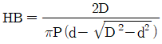
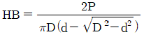
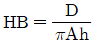
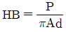
(정답률: 70%)
58. 각종 재료에 대한 인장시험을 한 결과 다음과 같은 인장곡선을 얻었다. 곡선과 재료가 옳게 짝지어진 것은?
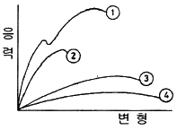
- ①-황동
- ②-주철
- ③-연강
- ④-합금강
(정답률: 38%)
59. 시험편을 편광으로 검경하면 부식을 하지 않아도 결정입자가 상을 식별할 수 있는 광학적 이방성을 가진 금속은?
- 철(Fe)
- 알루미늄(Al)
- 지르코늄(Zr)
- 구리(Cu)
(정답률: 44%)
60. 자분탐상검사에서 선형자계를 형성하는 것은?
- 코일법
- 프로드법
- 직각통전법
- 전류광동법
(정답률: 55%)